Una jornada al más alto nivel sobre los fundamentos éticos, científicos, económicos y normativos de una nueva gobernanza del dato, articulada desde una perspectiva humanista en la Universidad Pontificia Comillas.
Vivimos en una sociedad cuya vida cotidiana, desde la salud a la educación, el trabajo o la participación política, está mediada por datos. Esos datos, sin embargo, no fluyen en un marco de reglas que hayamos deliberado colectivamente. El contrato social de la era digital es el que nunca se firmó.
Esta jornada inaugural reúne a investigadores y a una primera línea de pensadores en torno a DIGNUM, una iniciativa académica de la Universidad Pontificia Comillas que sitúa la dignidad de la persona en el núcleo del debate sobre la inteligencia artificial y la soberanía del dato.
El marco conceptual de la iniciativa DIGNUM. Un paper elaborado por un equipo interdisciplinar de nueve investigadores que articula el nuevo contrato social digital con la dignidad de la persona como eje normativo.
Leer el paper (PDF)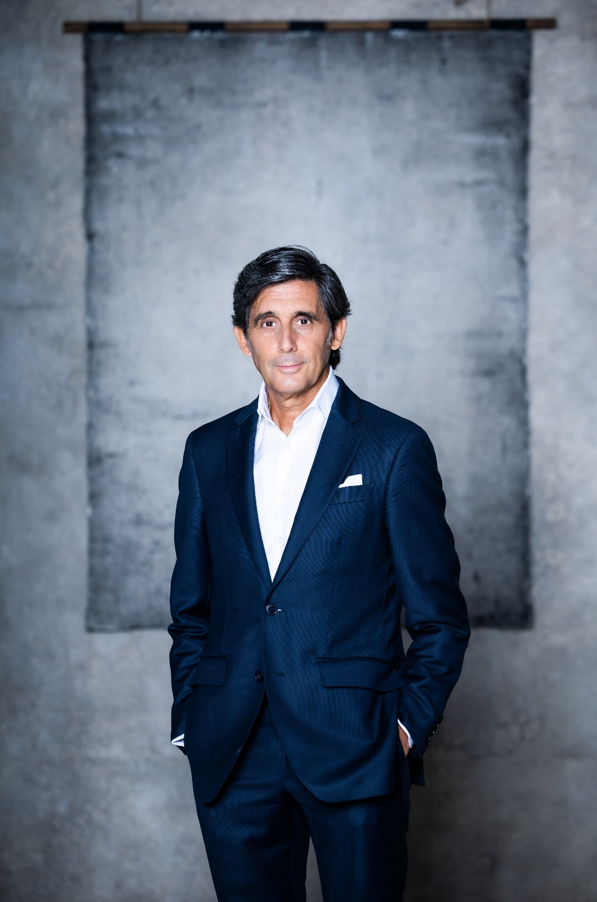
José María Álvarez-Pallete, ex presidente ejecutivo de Telefónica y Associate Researcher en Comillas, co-lidera la iniciativa DIGNUM junto a la Dra. Reyes Calderón. Desde hace años lidera en primera línea el debate europeo e internacional sobre una tecnología al servicio de la persona, impulsando un nuevo pacto digital que ponga la dignidad humana en el núcleo.
Como representante de la iniciativa, Álvarez-Pallete extiende personalmente la invitación a los ponentes de la jornada y modera la mesa redonda sobre soberanía digital con las voces que están dando forma a la gobernanza del dato en Europa.
Miércoles 17 de junio de 2026 · Alberto Aguilera 23, Madrid · Universidad Pontificia Comillas
Recepción de asistentes y entrega de materiales de la jornada.
Acto inaugural de la jornada, palabras institucionales de la Universidad y presentación pública del centro DIGNUM.
Intervienen: Dr. Javier Márquez, Decano de la Facultad · Dra. Reyes Calderón, en nombre de la casa · Dª. Esther Planas, Fundación "la Caixa" · D. Fernando Vives, Presidente ejecutivo de Garrigues · Presentación del centro DIGNUM.
Presentación del contexto y de los retos actuales de la soberanía digital en un diálogo al más alto nivel europeo.
Modera: José María Álvarez-Pallete.
Intervienen: Leonardo Cervera, Secretario General del European Data Protection Supervisor · Giorgia Abeltino, Directora institucional de Google Cloud para EMEA · Carlos Santana (DotCSV), divulgador y especialista en inteligencia artificial · Josep Ollé, Fundación "la Caixa".
Espacio de networking entre ponentes y asistentes.
Cuatro conferencias consecutivas que articulan las dimensiones científica, filosófica, tecnológica y normativa del nuevo contrato social digital, con la dignidad de la persona como eje vertebrador.
11:30 – 12:10 · Dimensión científica. Dr. Juan Ignacio Cirac, Director del Instituto Max Planck de Óptica Cuántica. La frontera cuántica: ciencia, cómputo y soberanía tecnológica.
12:10 – 12:50 · Dimensión normativa. Dra. Reyes Calderón, Universidad Pontificia Comillas. El contrato social digital: dignidad humana y arquitectura ética del dato.
12:50 – 13:25 · Dimensión tecnológica. Dr. Francisco Herrera, Universidad de Granada, Academia Europaea. Inteligencia artificial responsable: del laboratorio a la gobernanza.
13:25 – 14:00 · Dimensión filosófica. Dra. Carissa Véliz, Institute for Ethics in AI, University of Oxford. La privacidad como poder: repensar los datos personales en la era de la IA.
Cierre institucional de la jornada con la representación de Garrigues y de la Universidad Pontificia Comillas.
Intervienen: D. Fernando Vives, Presidente ejecutivo de Garrigues · Dr. Jaime Tatay Nieto, SJ, Universidad Pontificia Comillas.
Espacio de conversación entre ponentes, asistentes e invitados institucionales.
Representación institucional, ciencia de frontera, filosofía de la privacidad, gobernanza europea del dato, política pública digital y la voz divulgativa de la inteligencia artificial. La lista se irá ampliando a medida que se confirmen nuevas participaciones.
Ex presidente de Telefónica. Co-lidera la iniciativa DIGNUM y Associate Researcher en Comillas.
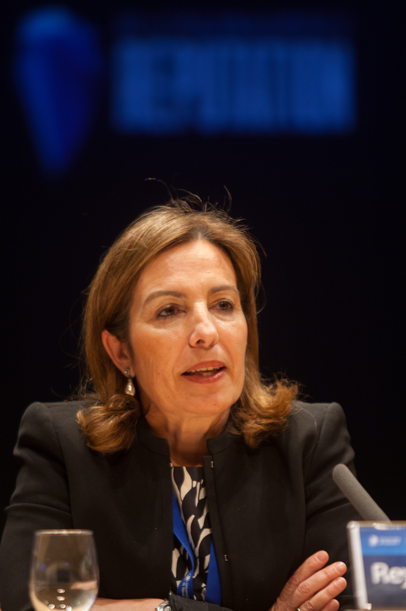
Doctora en Economía y en Filosofía por Navarra. Co-lidera la iniciativa DIGNUM y coautora del position paper fundacional.
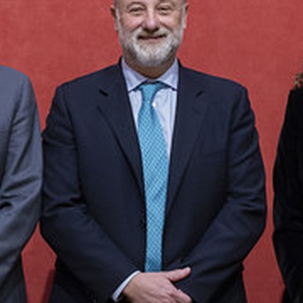
Decano de la Facultad. Representación institucional de la Universidad Pontificia Comillas en la apertura de la jornada.
Directora general adjunta de la Fundación "la Caixa". Interviene en la apertura institucional de la jornada.
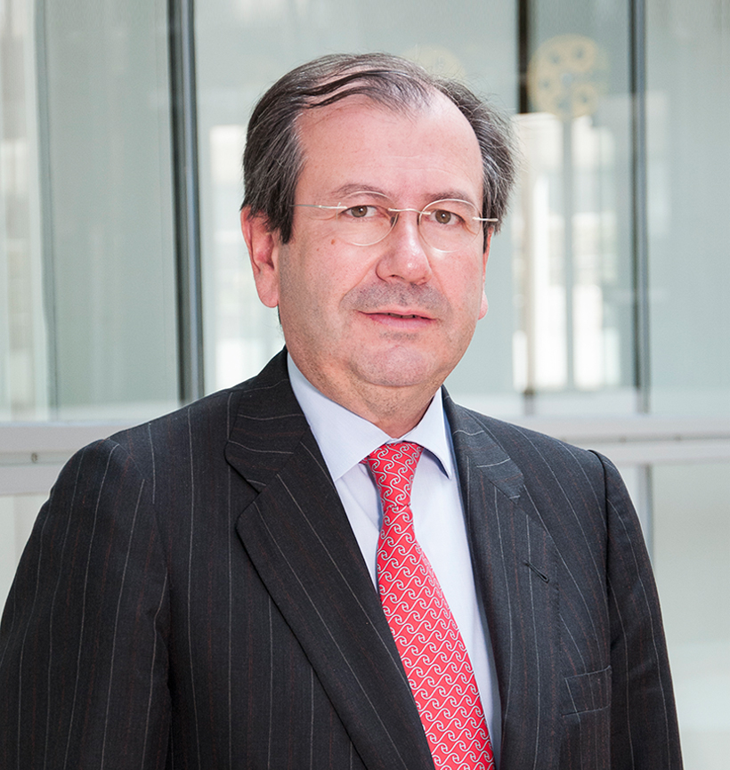
Presidente ejecutivo de Garrigues. Interviene en la apertura y en la clausura institucionales de la jornada.
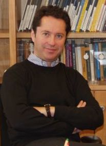
Director del Instituto Max Planck de Óptica Cuántica. Premio Príncipe de Asturias de Investigación Científica y Técnica (2006).
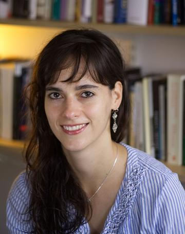
Associate Professor en el Institute for Ethics in AI de Oxford. Autora de Privacy Is Power (Economist Book of the Year).
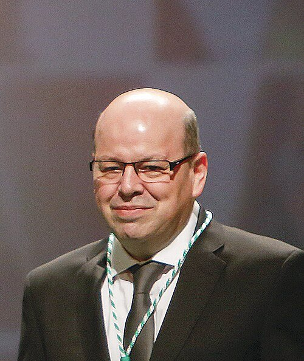
Catedrático de Ciencias de la Computación e Inteligencia Artificial. Académico de la Academia Europaea. Referencia internacional en inteligencia artificial responsable.
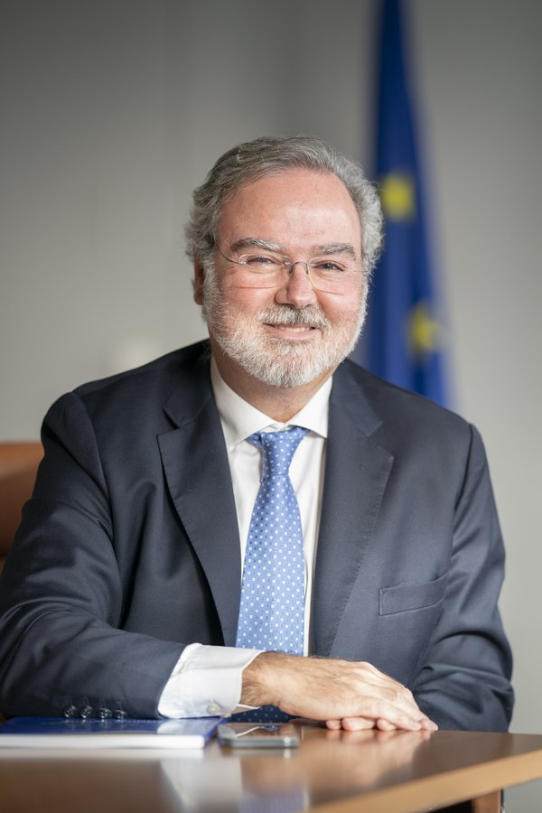
Secretario General del European Data Protection Supervisor. Voz de referencia europea en la gobernanza institucional del dato.
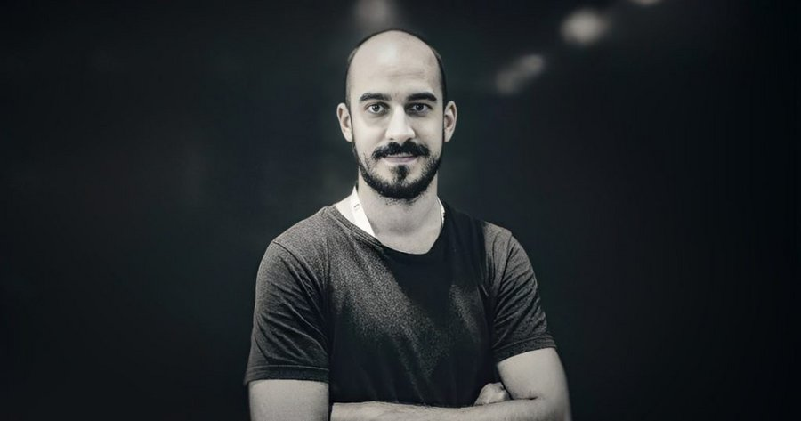
Divulgador y especialista en inteligencia artificial. Referencia hispanohablante en la difusión rigurosa de los avances en IA.
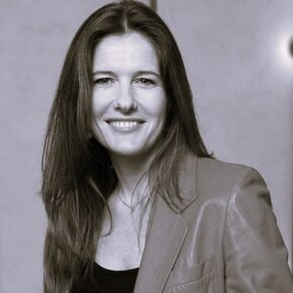
Directora institucional de Google Cloud para EMEA. Voz de referencia en políticas públicas de la era digital.
Director del Palau Macaya de la Fundación "la Caixa". Interviene en la mesa redonda sobre soberanía digital.
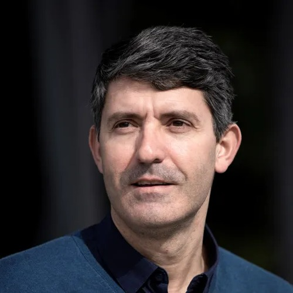
Profesor de la Universidad Pontificia Comillas. Cierra institucionalmente la jornada en representación de la casa.
Una iniciativa académica de la Universidad Pontificia Comillas que articula desde la universidad una respuesta humanista a los desafíos de la era digital.
Articular una reflexión rigurosa e interdisciplinar sobre la gobernanza del dato y la inteligencia artificial desde una perspectiva humanista. Soberanía del dato, ética aplicada a la IA, Dignity of Data Index y contrato social digital.
La iniciativa está impulsada por una constelación de voces académicas e institucionales de primer nivel, articulada desde la Facultad de Ciencias Económicas y Empresariales (Comillas ICADE).
El position paper fundacional Personal Data as a Human Right (arXiv, 2026), elaborado por un equipo interdisciplinar de nueve investigadores, articula el marco conceptual de la iniciativa.
Aforo limitado. Se reservan plazas para invitados institucionales. La inscripción se gestiona a través de la plataforma de eventos de la Universidad Pontificia Comillas.